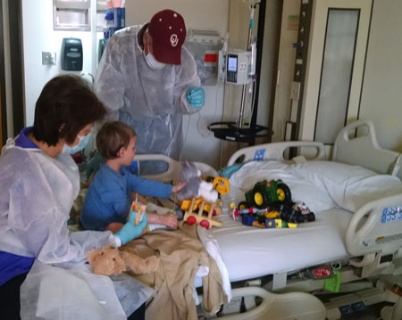
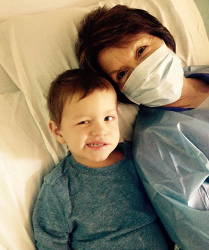
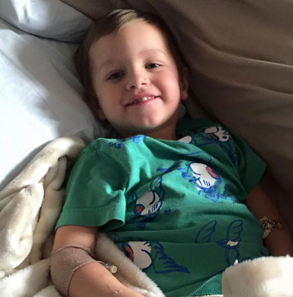

February 2015
| Poor Brodie got very sick in late January and
ended up spending about 6 days in the hospital. It was a scary
deal. He kept getting sicker while in the hospital and a diagnosis
was never found. We are thankful to God that he eventually started
getting better. They made us wear gowns and masks when we were with
him - not sure if it was to protect us from his mystery illness or to
protect him from germs from the outside. We did what they said in
case it was the latter. He was so thrilled to be allowed to go
home! |
|
 |
 |
| Here he is on day 5, when he had started to improve. He named his IV stand "Franklin." |
Here he is MeMaw showing off the moves he used on the nurses. He'd wink and ask, "Hey good lookin', whatcha cookin'?" |
 |
|
| Discharge day! Woo hoo! | |